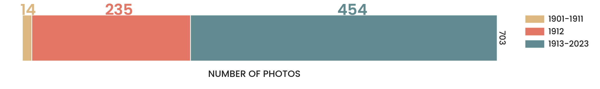

Ludwig von Bürkel’s photographic collection at the KHI
INDEX
ABOUT THE PROJECT
The project Bürkelens focuses on the analysis of the photographic collection of art historian Ludwig von Bürkel, donated to the photographic archive of the Kunsthistorisches Institut in Florenz in 1912. The project aims to assess the impact of Bürkel's collection on the overall holdings of the KHI Photothek through an in-depth analysis, highlighting its uniqueness and contribution to the expansion of the KHI collection. The data extraction and analysis are conducted using a Jupyter Notebook, which allows for a thorough inspection of the collection from various perspectives. Navigate through the next sections to learn more about Ludwig von Bürkel, his collection, and the KHI, before delving into the results.
Ludwig von Bürkel
Ludwig von Bürkel, also known as Luigi von Bürkel, was a German art historian born in Munich in 1877. He pursued a military career from 1898 to 1900 and later continued his academic studies in Berlin. Bürkel specialized in Art History and frequently traveled between Munich and Florence to expand his expertise. After his involvement in the First World War, Bürkel resumed his activities as an art historian, art merchant, and travel guide in Italy and France. He completed a monograph on his grandfather, the painter Heinrich Bürkel, during World War II and settled in Kochel am See. Ludwig von Bürkel passed away on June 11, 1946.
Throughout his life, Ludwig von Bürkel made significant contributions to the field of art history. He founded and directed journals such as the Münchner Jahrbuch der bildenden Kunst and the Münchener graphische Gesellschaft. In 1912, Bürkel made a notable donation of 1000 photographs to the Kunsthistorisches Institut in Florence. The institute's archive still preserves 231 photos from his collection, and the Bürkelens project focuses on studying the impact of his photographic collection on the KHI Photothek.
The Collection
Ludwig von Bürkel's photographic collection at the Kunsthistorisches Institut in Florence consists of photographs of mainly Italian Renaissance and Baroque paintings. The 1912 donation of 1000 photographs is recorded in the archive inventory books, however, only 231 are available in the KHI's Photothek today.
The photographs are affixed to cardboards, which has helped preserve them in good condition. Each cardboard includes various details about the photograph, such as inventory and negative numbers. Often, there are annotations related to the painting's title and attribution. A stamp indicates the category of the archive where the photograph are stored, while the Kunsthistorisches Institut stamp is generally found at the bottom. The collection features several photographers and employs different photographic techniques. The collection highlights section provides some examples, while more content-related details will be revealed in the following sections.
Year of acquisition
Photographs
Featured artists
The Photothek of the KHI

The Kunsthistorisches Institut in Florenz (KHI) is an esteemed research institutions focused on history of art and architecture in Italy. Established in 1897, it became part of the Max Planck Society in 2002.
The institute's Photothek holds over 630.000 photographs primarly featuring Italian artworks from late Antiquity to the modern era. The archive actively acquires new photographs each year, while its main tasks involve preserving, investigating, and digitizing the historical collection.
All acquisitions throughout the decades until 1993 were manually recorded in the Photothek's inventory books. The upper photo on the left shows the Photothek before the First World War; below, two pages of the fifth inventory book including information of acquisitions between 1911 and 1924 are shown. By zooming in, one can observe the entries in detail: the left page contains information about the artworks, while the right page provides details about the photographs, including their provenance — where the name of Bürkel is mentioned. These serve as a fundamental resource, enabling the identification of specific photograph locations within the archive.
Resources:
Highlights from the Collection


{kind=link}
{kind=link}
Research Questions
The main purpose of this project is to assess the impact of Ludwig von Bürkel's collection on the overall collection of the KHI. and and determine the categories on which the collection had a relevant impact. In order to determine this impact, the following questions were taken into consideration while conducting the data analysis. The answers are provided in the following sections through graphical visualizations.
Impact on theoverall collection
RELEVANT PAINTINGS: Are there objects of particular interest that Bürkel contributed to document?
NEW PHOTOGRAPHS: Did the acquisition in 1912 expand the KHI collection with photos of artworks that were not featured in the archive yet?
UNIQUE PHOTOGRAPHERS How many unique photographs of paintings are entailed in Bürkel's collection?
DESTROYED PAINTINGS: How are destroyed and missing paintings from Bürkel's photo collections represented in the KHI archive? What was Bürkel's contribution?
Impact onspecific categories
ARTISTS: What artists is the collection mainly focused on?
COUNTRIES: What are the predominant countries of reference of the artworks?
ARTISTIC PERIODS: Which artistic period is predominantly represented in the photo collection?
PHOTOGRAPHERS: What photographers are mainly featured in the collection?
LOCATIONS: Where are the artworks depictedin Bürkel's collection located?

Data related to Bürkel's collection was recently added to the KHI's database. Each database entry corresponds to an artwork or object, and within the same document all photographs of that particular object are listed. To isolate the relevant data, documents that did not contain photographs from the Bürkel collection were filtered out. The outcome was an XML-format document containing information about the photographs and the depicted paintings, with each data point associated with a specific field code. The analysis involved extracting relevant information from the document, cleaning the data, integrating it using SPARQL queries, and ultimately generating results to address the research questions.
The complete analysis is available in the Jupyter Notebook within the Github Repository of this Project. Graphical representations of the results are shown in the following sections.
On the right, one example of a phtograph entry extracted from the XML document.
Data Overview
<a8450>Foto
<a8496>1912</a8496>
<a84fl>13652</a84fl>
<a8515>Mal. Bar.</a8515>
<a8460>Hanfstaengl</a8460>
<a8490>Hanfstaengl</a8490>
<a8494>vor 1903</a8494>
<a8478>Lichtdruck<a8478a>Sepia getönt</a8478a></a8478>
<a8596>Cimelia Photographica (Standardformat)</a8596>
<a8497>Geschenk</a8497>
<a8498>Buerkel, Ludwig von</a8498>
<a8470>Hanfstaengl 33</a8470>
<a8480>25,3 x 19,6 cm (Foto)</a8480>
<a8482>monochrom</a8482>
<a8510>Gesamtansicht</a8510>
<a8330>Fotokatalog Hanfstaengl, Verlags-Katalog, 1903
<a8334>S. 61</a8334>
<a8200 edp:augmented="lit::70000381">70000381</a8200>
</a8330>
<a8494a edp:augmented="no:reference">1893</a8494a>
<a8494e edp:augmented="no:reference">1903</a8494e>
</a8450>
Data Visualization
YEAR DISTRIBUTION OFACQUIRED PHOTOS BY TIME SPAN
One way to understand the relevance of Bürkel's contribution to the overall collection of the KHI Photothek is by examining the number of photos that were added to the archive before and after 1912, the year of his donation. Today, the Photothek of the KHI holds 708 photographs of paintings that are featured in the Bürkel collection, including 231 photographs contributed by Bürkel himself. 454 photographs of the same artworks entered the KHI archive after this acquisition, while before 1912, only 14 photographs of these paintings were accessible in the archive.
Data Visualization
Percentage of Paintingswith Individual Photos
Bürkel's collection holds a special significance within the archive due to the presence of paintings that only exist in his collection. These artworks are not represented in any other photograph in the archive. Surprisingly, around one third of the paintings in Bürkel's collection fall into this category. This means that the photographs from Bürkel's collection are the only visual record of these specific paintings within the Photothek, offering exclusive documentation of these unique artworks.

Data Visualization
Destroyed orMissing Paintings
The Photothek contains numerous photographs that depict artworks that no longer exist. Through the database, we can determine the condition of these artworks and identify missing or damaged pieces. Analyzing the data, we discovered that within the Bürkel collection, nine paintings are currently missing or destroyed. Interestingly, only one painting by Benozzo Gozzoli is captured in two photographs, one from Bürkel's collection and another from a different source. In contrast, the rest of the paintings have a single photograph in the entire archive, exclusively found in the Bürkel collection. These photographs play crucial role in preserving the visual record of these paintings.
.")

Data Visualization
CHRONOLOGICAL DISTRIBUTION OF PHOTOS OF MOST FREQUENT PAINTINGS
This chart offers a view of paintings within the Bürkel collection that are depicted in at least five photos within the archive. It shows the number of photographs through small rectangles, arranged chronologically from left to right based on their archival date. To provide a better understanding, the photos are categorized into three groups: those from the Bürkel collection, those acquired before it, and those obtained after it. For most of the paintings, the first photograph that entered the archive originated from Bürkel's collection. Several new photographs of these paintings were acquired after the inclusion of Bürkel's collection, indicating continued expansion of the KHI Photothek's visual records.

Let's now address the second research questions to explore the influence of Bürkel's collection across various categories. This section shows the most represented artists, focusing on the number of photographs within the Bürkel collection.The most represented artist in the collection is unquestionably the Italian Baroque painter Guercino, featured in 48 photographs. The acquisition of the art historian collection allowed to considerably increase the number of photos of Guercino's paintings in the Photothek.
Data Visualization
NUMBER OF PHOTOS PER ARTIST FROM THE BÜRKEL COLLECTION
Data Visualization
ARTISTS ORIGIN COUNTRIES
A further interesting fact about the collection is that it primarily focuses on Italian artists, including a total of 105. Notably, the collection features only two artists from different countries, specifically from Belgium and the United Kingdom, highlighting the collection's emphasis and Bürkel's interest on Italian art.
Data Visualization
PHOTOS DISTRIBUTION FOR ARTISTIC PERIOD FROM THE BÜRKEL COLLECTION

Let's now explore the distribution of photographs in Bürkel's collection based on different artistic periods, as classified by the KHI Photothek. We find 147 photos of Renaissance paintings, which almost double the number of photos of Baroque artworks. We can observe that out of the 79 photographs of Baroque paintings, an impressive 48 of them are dedicated to the works of Guercino. In contrast, the subset of Renaissance photographs exhibits a more diverse distribution of artists, presenting a broader range of contributors from this period.
Data Visualization
NUMBER OF PHOTOS PER PHOTOGRAPHER
The existence of Bürkel's collection as we know it today owes much to the work of its photographers. Notably, the collection of the KHI was enriched with a remarkable addition of 70 photos of German photographer Hanfstaengl, followed by Italian photographers Anderson and Brogi. This inclusion of both Italian and German photographers offers compelling evidence of Ludwig von Bürkel's frequent travels between Munich and Florence. It suggests that his journeys also served as a means to expand and enrich his photo collection.

Data Visualization
PAINTINGS LOCATIONS
This map provides an overview of the present-day and former locations of the paintings within Bürkel's collection. A significant number of paintings in the collection are predominantly situated in various Italian cities, including Rome, Florence, and Genoa. Additionally, the collection includes artworks located in Vienna, as well as several notable cities in Germany, such as Dresden, Berlin, and Munich
Data Visualization
PAINTINGS INSTITUTIONS
From our data, we have obtained information about the specific holding institutions of the paintings from the collection. Bürkel's collection contributed to the Photothek with several photographs of paintings from the Dresden Old Masters Picture Gallery, which is also where six out of the nine missing or destroyed paintings were originally located. Additionally, significant additions to the collection include photographs of paintings from the Galleria degli Uffizi in Florence, the Kunsthistorisches Museum in Vienna, and the Berlin State Museums.
Conclusions &Recommendations for further research
Impact onthe overall collection
The acquisition of Bürkel's collection in 1912 brought a substantial number of previously unseen photographs into the archive, contributing to expand the collection with photos of artworks that were not present in the Photothek.
Bürkel's collection contains photographs of artworks that are unmatched in the archive, allowing to preserve the visual record of these paintings and providing material for research on these objects.
The collection features unique photos of several paintings that no longer exist, making these images an invaluable testament.
Impact on specific Categories
The collection's contributed to enrich the KHI collection with photos featuring Italian artists, with the Italian Baroque painter Guercino being prominently featured. Otherwise, a high number of photos of paintings from Italian Renaissance was added to the Photothek's collection.
Bürkel's collection allowed to expand the set of photographs by German photographer Hanfstaengl.
The artworks in the collection are mainly located in Italy (in particular Rome and Florence), Germany, and Vienna. The greatest contribution was given with photos of several paintings from the Old Masters Picture Gallery in Dresden.
Further research
The project Bürkelens can serve as starting point for several research possibilities. It provides a basis for a more in depth analysis on the figure of the art historian Ludwig von Bürkel, with the possibility to examine his publications in relation to his photo collection.
Another possibility is to integrate information about the remaining part of the collection and conduct further analysis on this data, documented on the inventory books, which was not included in the project due to scope and time limitations.
An interesting perspective could emerge from the comparison between Bürkel's collection and photographic collections of other art historians, such as the one available on ARTchives.
This project could serve as a model for analyzing other collections held in the Photothek of the KHI.
Lastly, the project provides insights to expand the development of methods for data extraction from the KHI database for future analyses.
Credits
This project owes its realization to the collaboration of the Photothek of the Kunsthistorisches Institut in Florenz. Their provision of data, images, and permission to access and work with this information made this project come to fruition.
Copyright information related to the photographs from the Highlights from the Collection section is available within the photographs. The rest of the images proceeding from the Kunsthistorisches Institut in Florenz are listed here. All photographs are used with permission.
Palma Vecchio, Ritratto di Donna © Kunsthistorisches Institut in Florenz - Max-Planck-Institut, Photographer: Hanfstaengl.
Ludwig von Bürkel © Bürkel, Ludwig von: Vom Rindermarkt zur Leopoldstrasse. Jugenderinnerungen aus dem München König Ludwigs, Munich 1966 (Link, 12.06.23)
A. del Pollaiolo, Scene dalle fatiche di Ercole © Kunsthistorisches Institut in Florenz - Max-Planck-Institut, Photographer: Alinari.
G. Mazzola Bedoli, Madonna con Bambino e S. Bruno © Kunsthistorisches Institut in Florenz - Max-Planck-Institut, Photographer: Hanfstaengl.
Correggio, La nascita di Cristo © Kunsthistorisches Institut in Florenz - Max-Planck-Institut, Photographer: Hanfstaengl.
Guercino, La Sibilla © Kunsthistorisches Institut in Florenz - Max-Planck-Institut, Photographer: Hanfstaengl.
Leonardo Da Vinci, Ritratto di Gabrielle d'Eströes © Kunsthistorisches Institut in Florenz - Max-Planck-Institut, Photographer: Hanfstaengl.
Bronzino, Venere e Amore © Kunsthistorisches Institut in Florenz - Max-Planck-Institut, Photographer: Hanfstaengl.
Photothek in the Palazzo Guadagni before the First World War © Kunsthistorisches Institut in Florenz - Max-Planck-Institut (Link).
Inventory Book V of the KHI Photothek © Kunsthistorisches Institut in Florenz - Max-Planck-Institut.
Guercino, Madonna del Carmine con Santi © Kunsthistorisches Institut in Florenz - Max-Planck-Institut, Photographer: Brogi.
Guercino, Nascita di Adone © Kunsthistorisches Institut in Florenz - Max-Planck-Institut, Photographer: Bruckmann.
Guercino, Diana © Kunsthistorisches Institut in Florenz - Max-Planck-Institut, Photographer: Bruckmann.
Guercino, Semiramis © Kunsthistorisches Institut in Florenz - Max-Planck-Institut, Photographer: Bruckmann.
Benozzo Gozzoli, Madonna con Bambino e Santi © Kunsthistorisches Institut in Florenz - Max-Planck-Institut, Photographer: Hanfstaengl.
Guercino, Morte di Adone © Kunsthistorisches Institut in Florenz - Max-Planck-Institut, Photographer: Bruckmann.
Dosso Dossi, Immaculata Conceptio © Kunsthistorisches Institut in Florenz - Max-Planck-Institut, Photographer: Rudolph Tamme.
Guercino, Venere e Adone © Kunsthistorisches Institut in Florenz - Max-Planck-Institut, Photographer: Bruckmann.
Contact
Alessandra Failla
I am a student pursuing a Master's Degree in Digital Humanities and Digital Knowledge at the University of Bologna. I hold a degree in History of Art and Economics from the University of Heidelberg, and currently work at the KHI photo archive in Florence.